2 Ekonomické základy: Peníze a úrokové sazby
Studijní materiály
- Dahlquist, J. R., &; Knight, R. (2022). Principles of finance. OpenStax, Rice University. https://openstax.org/details/books/principles-finance
- Chapter 3 - Economic Foundations: Money and Rates
Výstupy z učení:
- Porozumět základním konceptům mikroekonomie, včetně teorií poptávky, nabídky a rovnovážné ceny.
- Chápat klíčové makroekonomické ukazatele, jako je inflace, nezaměstnanost nebo hrubý domácí produkt a jejich dopad na ekonomiku.
- Identifikovat a interpretovat fáze hospodářského cyklu.
- Zhodnotit dopad úrokových sazeb na ekonomiku a rozhodování jednotlivců.
- Chápat faktory určující směnné kurzy a jejich vliv na globální obchod a domácí ekonomiku.
2.1 Mikroekonomie
- Mikroekonomie studuje rozhodnutí a akce jednotlivých aktérů v ekonomice jako jsou firmy a spotřebitelé.
- Pomáhá finančním manažerům pochopit trh, cenotvorbu a dostupnost zdrojů.
2.1.1 Poptávka
- Poptávka odkazuje na množství zboží nebo služby, které jsou spotřebitelé ochotni a schopni koupit za různé ceny, za předpokladu, že všechny ostatní faktory zůstanou konstantní.
- Poptávka po produktu může být ilustrována prostřednictvím poptávkové křivky, která je typicky klesající, což reprezentuje zákon poptávky.
- Zákon poptávky, tj. nepřímý vztah mezi cenou a prodaným množstvím, je dán klesajícím uspokojením z konzumace dalších jednotek a omezenou schopností spotřebitelů platit.
- Poptávková křivka předpokládá, že se mění pouze cena produktu, zatímco všechny ostatní faktory zůstávají konstantní.
| Cena ($) | Množství |
|---|---|
| 30 | 0 |
| 25 | 10 |
| 20 | 20 |
| 15 | 30 |
| 10 | 40 |
| 5 | 50 |
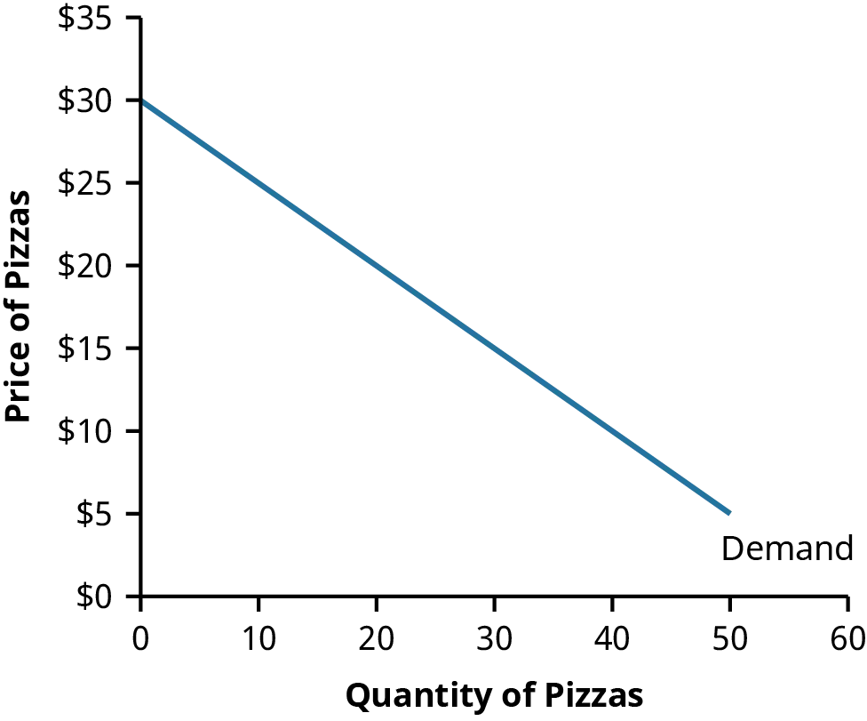
- Nicméně změny v dalších ekonomických faktorech, jako je příjem a preference spotřebitelů, velikost populace a ceny ostatních statků mohou způsobit posun poptávkové křivky.
- Nárůst poptávky, způsobený faktory jako je nárůst ceny substitů (podobných statků), posouvá poptávkovou křivku doprava, zatímco pokles poptávky, třeba kvůli negativní publicitě, ji posouvá doleva.
- Níže je zobrazen nárůst poptávky.
| Cena ($) | Množství |
|---|---|
| 30 | 9 |
| 25 | 19 |
| 20 | 29 |
| 15 | 39 |
| 10 | 49 |
| 5 | 59 |
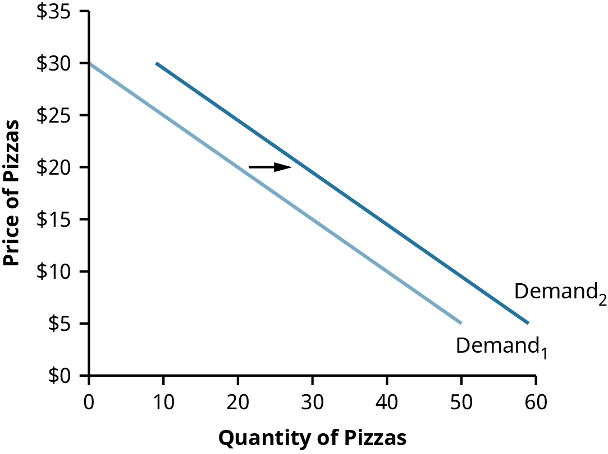
2.1.2 Nabídka
- Nabídka odkazuje na množství zboží nebo služby, které jsou podniky ochotni a schopni prodat za různé ceny, za předpokladu, že ostatní faktory zůstanou konstantní.
- Vyšší ceny často motivují výrobce, aby nabídli více svých produktů k prodeji, což naznačuje pozitivní korelaci mezi cenou a nabízeným množstvím.
- Nabídková křivka vizuálně reprezentuje tento vztah za předpokladu, že všechny ostatní relevantní ekonomické faktory zůstávají nezměněny.
- Pokud se změní jiné faktory, jako jsou náklady na výrobu nebo mzdy, nabídková křivka se posune.
- Posun doprava na nabídkové křivce naznačuje nárůst nabídky (větší množství za stejnou cenu), zatímco posun doleva naznačuje pokles nabídky.
| Cena ($) | Množství |
|---|---|
| 30 | 60 |
| 25 | 50 |
| 20 | 40 |
| 15 | 30 |
| 10 | 20 |
| 5 | 10 |
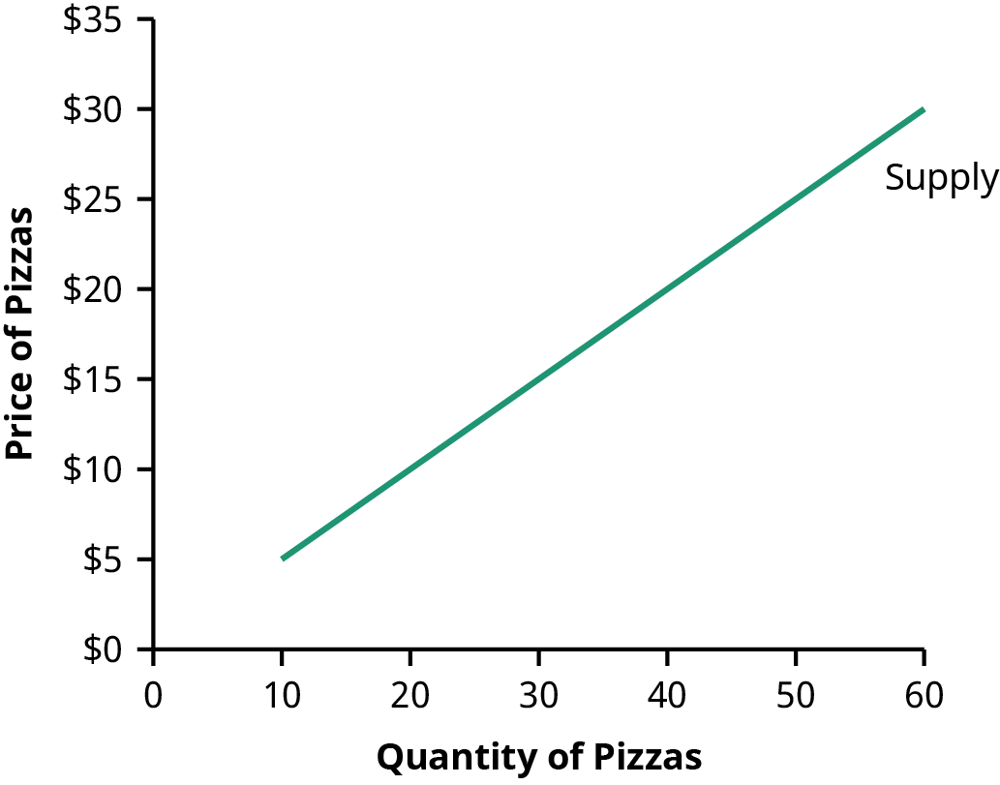
2.1.3 Rovnovážná cena
- Tržní rovnováha je určena interakcí poptávky (kupujících) a nabídky (prodávajících), reprezentovanou bodem průsečíku poptávkové a nabídkové křivky.
- V rovnováze je poptávané množství stejné jako nabízené a nevzníká tak žádný nedostatek ani přebytek.
- Na konkurenčním trhu vede cena vyšší než je rovnovážná cena k přebytku nabídky, což způsobuje snížení ceny a menší výrobu.
- Naopak cena nižší než rovnovážná vede k nedostatku, což tlačí ceny nahoru směrem k rovnováze.
- Tržní síly táhnou ceny k rovnováze a zůstávají tam, dokud se nezmění poptávka nebo nabídka.
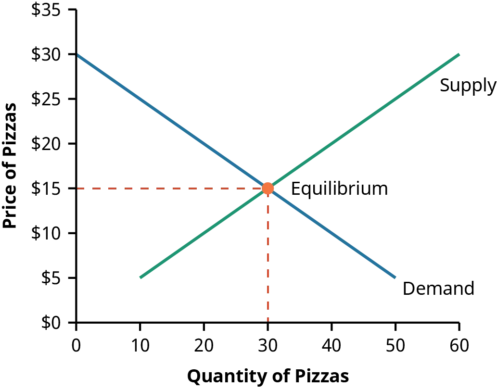
- Nárůst nabídky (posun nabídkové křivky doprava) vede k poklesu rovnovážné ceny.
- Nicméně, pohyb po poptávkové křivce kvůli změnám rovnovážné ceny je nárůst poptávaného množství, nikoli nárůst poptávky.
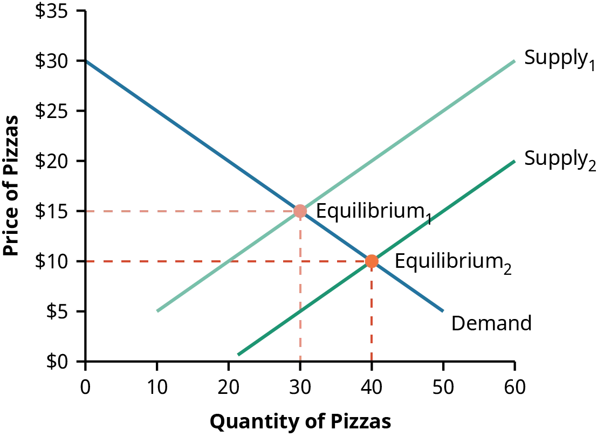
- Pokles poptávky (posun poptávkové křivky doleva) také vede k poklesu rovnovážné ceny.
- Výrobci se pohybují po nabídkové křivce a vyrábí méně produktů, když cena klesá, což se nazývá pokles nabízeného množství.
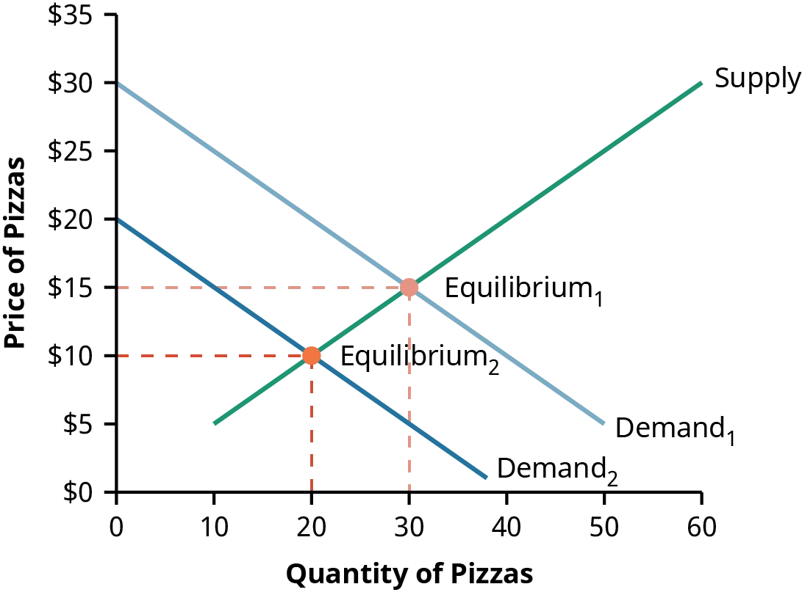
2.2 Makroekonomie
- Makroekonomie se dívá na ekonomiku jako celek a zaměřuje se na otázky, jako je inflace, nezaměstnanost nebo hrubý domácí produkt (HDP).
2.2.1 Inflace
- Inflace označuje zvyšování cenových hladin v čase.
- Způsobuje pokles kupní síly měny, což znamená, že daná měna už nemůže koupit tolik věcí, jako dříve.
- Měření inflace má většinou provádí statistický úřad měsíčně, přičemž Index spotřebitelských cen (consumer price index, CPI) je nejčastěji citovaným ukazatelem.
- CPI je založen na nákladech na nákup pevného koše zboží a služeb, které by typická městská rodina mohla zakoupit.
- Index jádrové inflace (core inflation) je vypočítán vyloučením nestabilních ekonomických proměnných jako jsou energetické a potravinové ceny.
- Index cen výrobců (producer price index, PPI) měří ceny, které výrobci platí za dodávky a suroviny, což naznačuje možné budoucí nárůsty CPI.
- Alternativou pro výpočet inflace může být také deflátor HDP, který používá ceny z výchozího roku k vypočítání toho, jaký by byl HDP, pokud by ceny byly identické s těmi ve výchozím roce.
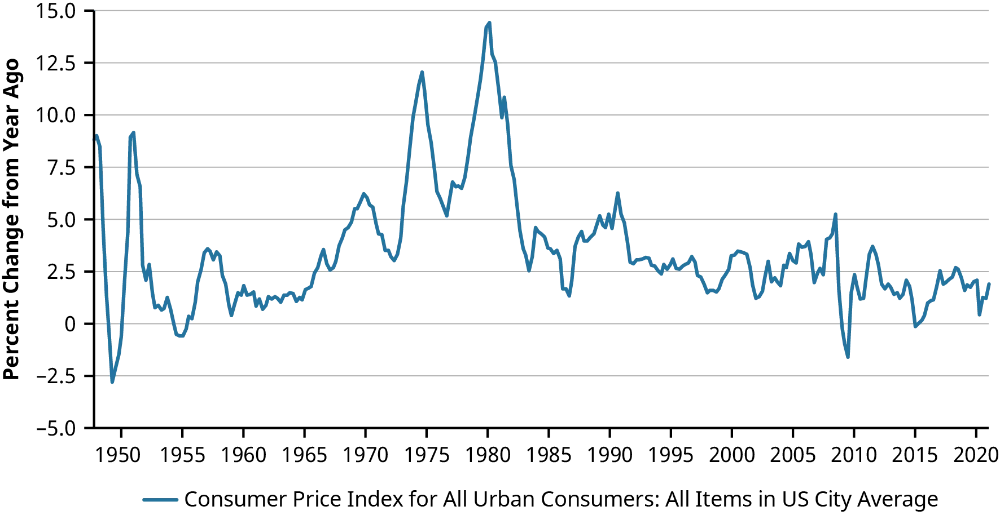
2.2.2 Nezaměstnanost
- Nezaměstnanost se vztahuje na lidi, kteří nepracují, ale aktivně hledají práci a jsou schopni práci přijmout.
- Míra nezaměstnanosti je procento pracovní síly, která je nezaměstnaná, vypočítaná jako:
\[ \text{Pracovní síla} = \text{Počet zaměstnaných} + \text{Počet nezaměstnaných} \]
\[ \text{Míra nezaměstnanosti} = \frac{\text{Počet nezaměstnaných}}{\text{Pracovní síla}} \]
- Ne každý bez práce je považován za nezaměstnaného.
- Například důchodci nebo rodiče pečující o domácnost a nehledající zaměstnání nejsou zahrnuti do pracovní síly.
- Statistický úřad zveřejňuje míru nezaměstnanosti každý měsíc.
- Pro porovnání míry nezaměstnanosti po celém světě navštivte https://openstax.org/r/data-world-bank.
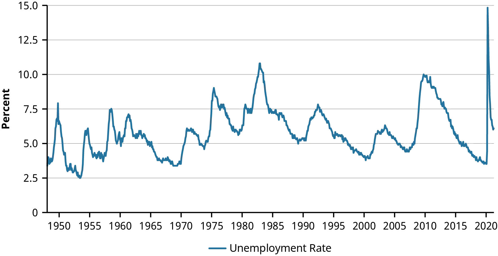
2.2.3 Hrubý domácí produkt
- Hrubý domácí produkt (HDP) představuje celkovou peněžní hodnotu všech konečných statků a služeb vyrobených v zemi během jednoho roku.
- HDP lze vypočítat sečtením všech položek zakoupených v ekonomice, rozdělených do čtyř kategorií: spotřeba, investice, vládní výdaje a čistý export.
- Čistý export zahrnuje hodnotu statků vyrobených v domácí ekonomice a prodaných v zahraničí, mínus hodnotu statků vyrobených v zahraničí a zakoupených v domácí ekonomice.
- Nominální HDP, tržní hodnota všech vyrobených statků a služeb, může narůst kvůli zvýšení produkce nebo zvýšení cen (inflace).
- Reálný HDP, vypočítaný korigováním nominálního HDP o inflaci, roste pouze pokud roste produkce statků a služeb.
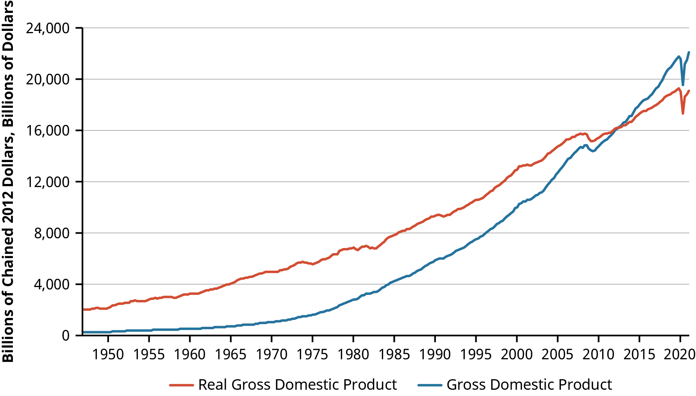
2.3 Hospodářský cyklus a ekonomická aktivita
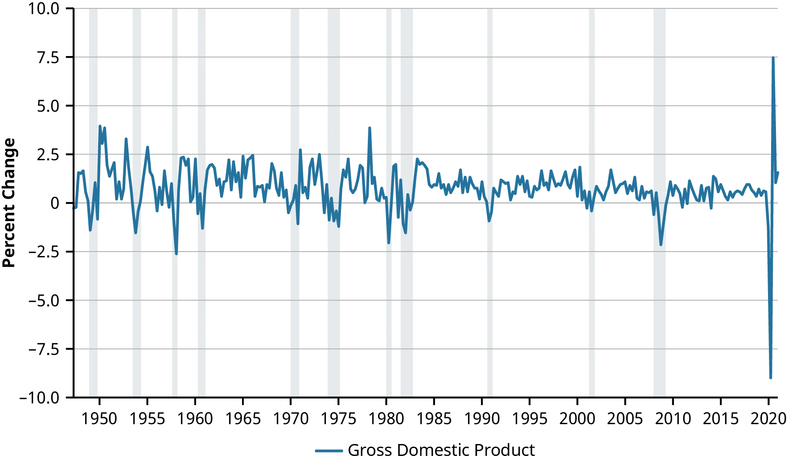
- Růst ekonomiky není v čase konstantní; má období rychlejšího růstu a období negativního růstu, známé jako hospodářský cyklus.

- Hospodářský cyklus se skládá z období ekonomické expanze a kontrakce.
- Během fáze expanze roste HDP, zaměstnanost se zvyšuje a nezaměstnanost klesá.
- Další ukazatele jako je zakládání nových firem nebo stavba stavba nových domů, mohou narůst.
- Časem rychlá expanze zpomaluje, což převede ekonomiku do fáze kontrakce.
- Tento bod je známý jako vrchol hospodářského cyklu.
- Kontrakce je často spojena se zvyšující se nezaměstnaností a zpomalujícím HDP.
- Bod, kdy kontrakce končí a začíná expanze, se nazývá dno.
- Délka hospodářského cyklu se měří od jednoho dna k dalšímu.
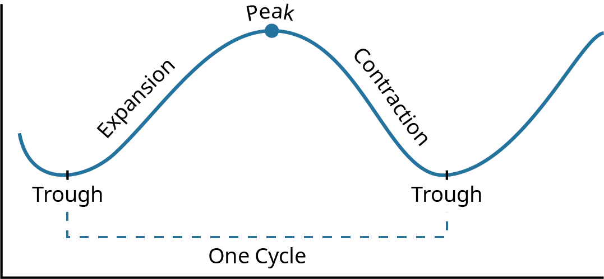
- Recese, často synonymum pro fázi kontrakce, bývala definována jako dvě po sobě jdoucí čtvrtletí poklesu HDP.
- Dnes Národní úřad pro ekonomický výzkum (National Bureau of Economic Research, NBER), který oficiálně deklaruje recese v USA, používá širší definici.
- Významný pokles ekonomické aktivity rozšířený napříč ekonomikou a trvající několik měsíců může být deklarován jako recese, bere se v úvahu reálný příjem, zaměstnanost, průmyslová výroba, velkoobchod a maloobchodní prodej, vedle reálného HDP.
2.4 Úrokové sazby
- Trh zápůjčitelných fondů (dostupných peněz) je řízen úrokovou sazbou (cenou peněz).
- Dodavatelé prostředků (věřitelé) jsou ti s rozpočtovým přebytkem, zatímco poptávači prostředků (dlužníci) jsou ti s rozpočtovým deficitem.
- Faktory ovlivňující nabídku a poptávku po penězích:
- velikost úspor
- přístup komerčních bank
- politika centrální banky
- politika vlády
- preference likvidity
- mezinárodní faktory
- Na tomto trhu reprezentuje vzestupně se sklánějící křivka nabídky věřitele, kteří jsou povzbuzeni k dodání více prostředků při vyšší úrokové sazbě, a sestupně se sklánějící křivka poptávky reprezentuje dlužníky, kteří poptávají méně prostředků, jak úrokové sazby rostou.
- Rovnováha na tomto trhu nastává tam, kde se křivky nabídky a poptávky protínají, stanoví úrokovou sazbu, která vyváží dodané a poptávané množství půjčitelných prostředků.
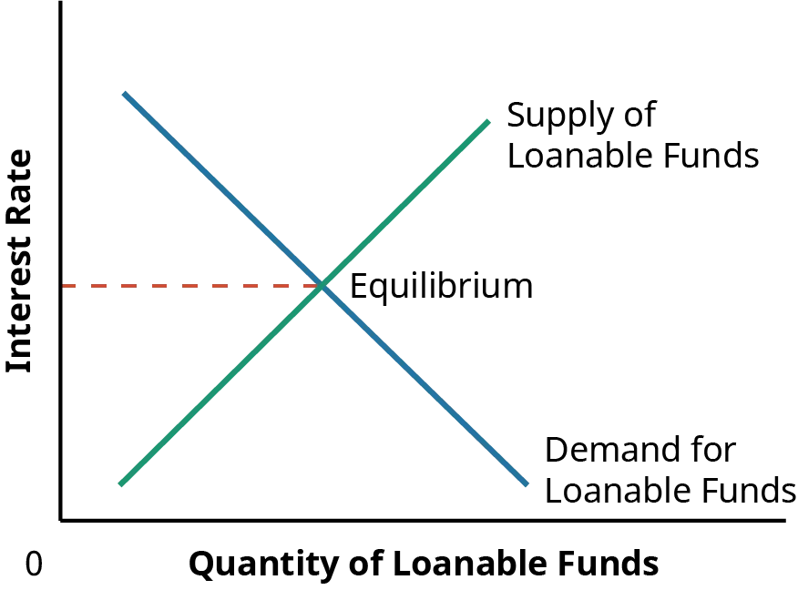
- Nominální úroková sazba je kotovaná sazba a reálná úroková sazba ji upravuje o inflaci. Vypočítá se jako: \[ \text{Reálná úroková sazba} = \text{Nominální úroková sazba} - \text{Inflace} \]
- Reálná úroková sazba, nikoli nominální, určuje skutečnou cenu půjčování si a odměnu za půjčování.
- Různé typy dlužníků mají různé úrokové sazby na základě jejich kreditního rizika.
- Státní dluhopisy mají zpravidla nejnižší (bezrizikovou) sazbu (může se velmi lišit u různých států), zatímco společnosti a jednotlivci mají vyšší sazby kvůli vyššímu riziku.
- Rizikové přirážky jsou účtovány jako kompenzace za kreditní riziko, které nesou věřitelé.
- Rizikovější dlužníci, jako jsou držitelé kreditních karet bez zástavy, mají tendenci platit mnohem vyšší úrokové sazby.
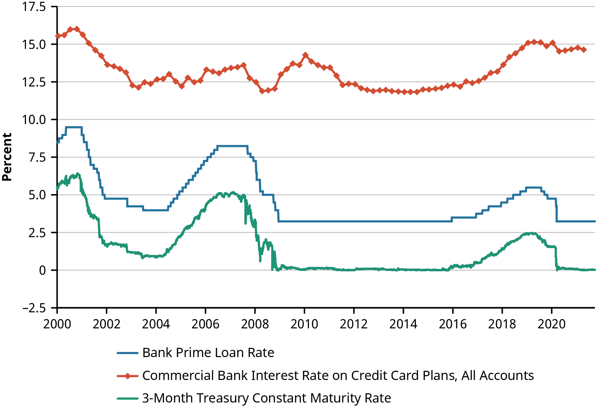
2.5 Směnné kurzy
- Směnný kurz je cena měny.
- Kurz pro okamžitou směnu se nazývá spotový měnový kurz.
- Přímá kotace: když jsou směnné kurzy vyjádřeny v jednotkách domácí měny za jednotku zahraniční měny.
- Například, pokud jsme v USA a směnný kurz mezi americkým dolarem a eurem je 1,2, to znamená, že EUR 1 je ekvivalentní USD 1,2. Přímá kotace je uvedena jako: \[ \text{USD } 1.2 = \text{EUR } 1 \]
- Nepřímá kotace: když jsou směnné kurzy vyjádřeny v jednotkách zahraniční měny za jednotku domácí měny.
- V předchozím příkladu by nepřímá kvótace z americké perspektivy byla kolik eur můžete koupit za 1 americký dolar. Pokud můžete koupit EUR 0,8333 eur za USD 1, nepřímá kotace je uvedena jako: \[ \text{USD } 1 = \frac{\text{EUR } 1}{\text{USD } 1.2} \] \[ \text{USD } 1 = \text{EUR } 0.8333 \]
- Tyto dva typy kotací poskytují stejné informace, ale v jiném formátu.
- Volba mezi přímou a nepřímou kotací závisí na místních tržních zvycích.
- Apreciace měny je, když náklady na nákup měny rostou. Pokud cena za nákup jednoho EUR stoupne na USD 1,3, EUR se apreciovalo (zhodnotilo se). To může být kvůli zvýšené poptávce po měně nebo snížené nabídce.
- Depreciace měny je, když náklady na nákup měny klesají. Pokud cena za nákup jednoho EUR klesne na USD 1,1, EUR depreciovalo (znehodnotilo se). To může být kvůli snížené poptávce po měně nebo zvýšené nabídce.
- Riziko směnného kurzu je starostí pro podniky zapojené do mezinárodního obchodu. Hodnota očekávaných příjmů nebo výdajů podniku se může změnit kvůli kolísajícím směnným kurzům.
- Ekonomická expozice odkazuje na riziko, že změna směnných kurzů může ovlivnit zákaznickou základnu a prodeje podniku.
- Apreciace nebo depreciace měny může ovlivnit kupní sílu spotřebitelů, což ovlivňuje např. jejich výběr dovolené.